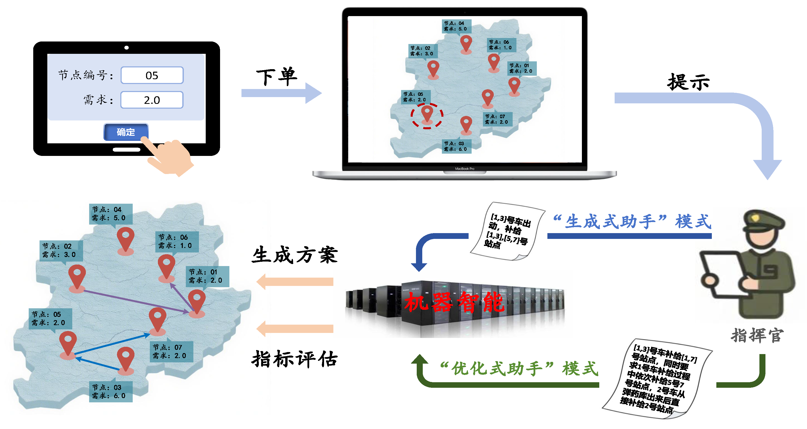
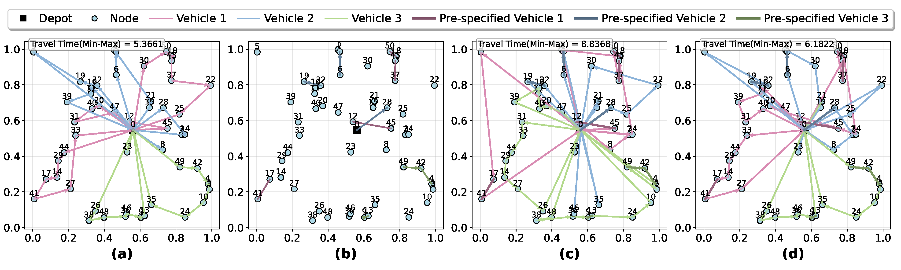

摘要
集群协同规划与决策是一类典型的 NP-hard 组合优化问题，现有研究方法大多针对特定场景设计，缺乏通用性，且严重依赖专家知识进行人工建模。为构建面向指挥决策的智能辅助系统，本文提出一种基于大语言模型的集群智能辅助规划智能体——奇门。该智能体通过大语言模型理解高层任务指令或自然语言描述，自动解析并转化为组合优化问题的超参数配置，进而驱动预训练求解器生成可行方案。为适应大规模集群实时调度中对人机交互效率的要求，本文设计了结构化指令集以压缩输入长度，并采用代码式输出格式以降低响应复杂度和提升解析速度。此外，智能体支持交互式决策修订机制：指挥员可基于领域经验或任务直觉，输入部分决策草案或初始方案，系统据此进行协同补全与优化。若输出结果未完全符合指挥意图，用户可进一步提供修正反馈，智能体将依据新输入实时响应，并以迭代方式动态生成调整后的方案，从而实现人机协同的渐进式决策优化。仿真与实际部署实验表明，所提出方法在通用性、响应速度和求解质量方面均具有显著优势。本工作的相关代码已开源，详见项目页面：https://qimen-agent.github.io/

人机协同决策的应用场景想定
人机协同决策的应用场景想定
Scenarios for Human-AI Decision Making

路径补全方法对比示意图. (a) 基准路径 (2D-Ptr); (b) 随机 Dropout 后路径草案; (c)
Greedy 补全结果; (d) Qimen 补全结果.
路径补全方法对比示意图. (a) 基准路径 (2D-Ptr); (b) 随机 Dropout 后路径草案; (c)
Greedy 补全结果; (d) Qimen 补全结果.
Comparison of Path Completion Methods. (a) Baseline path (2D-Ptr); (b) Path draft
after random dropout; (c) Greedy completion result; (d) Qimen completion result.
BibTeX
@article{Qimen2025,
title={Qimen-agent: An LLM-Driven Swarm Intelligence Assistant for Decision-Making},
author={Qidong Liu, Peiyi Fan, Bo Zhao, et al},
journal={中国科学-信息科学，Under Review},
year={2025},
url={https://qimen-agent.github.io/}
}